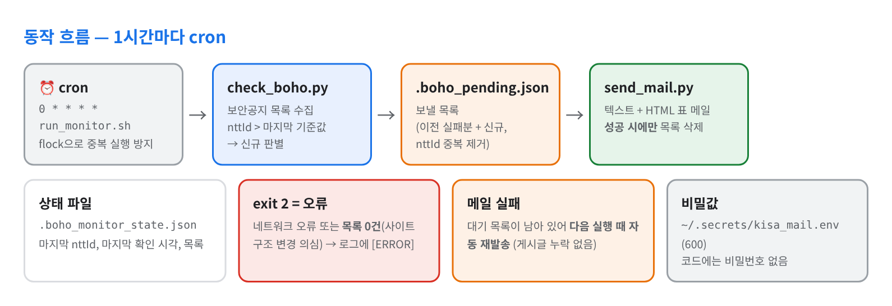
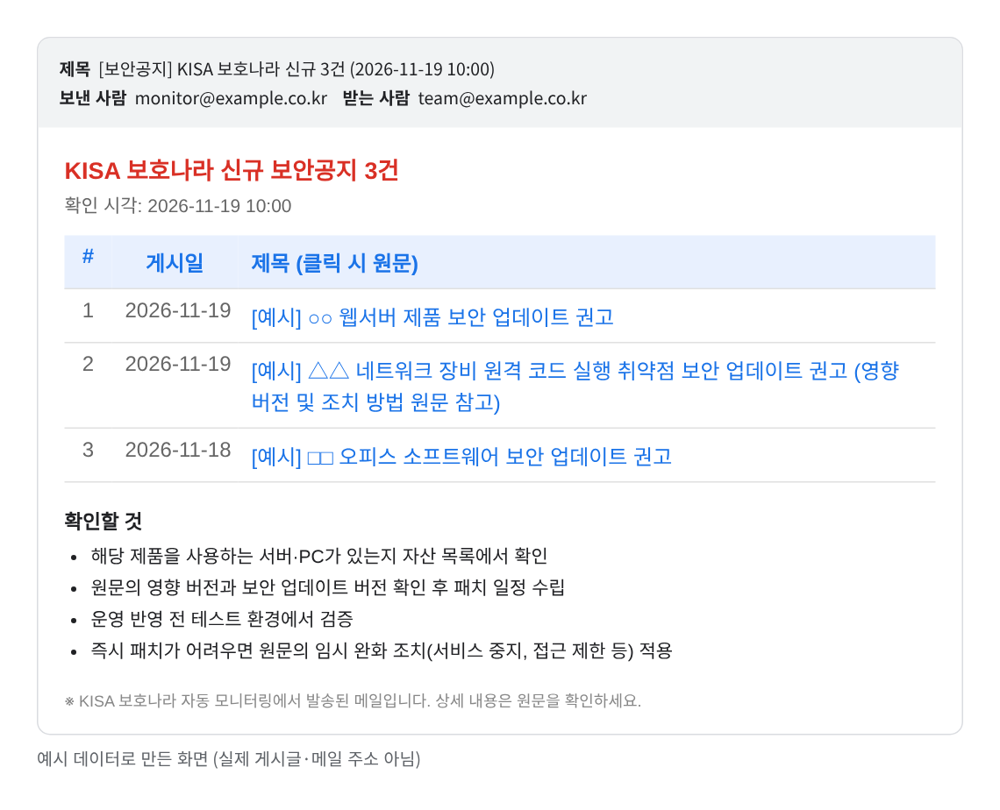
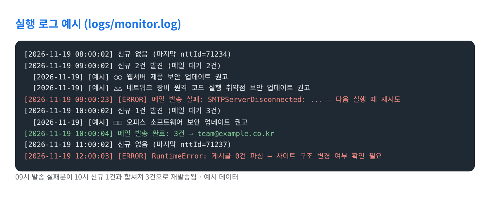

업무 자동화 · 보안 운영
KISA 보호나라 보안공지 자동 모니터링
서버·장비 취약점 대응을 하려면 KISA 보호나라의 보안공지(제품별 보안 업데이트 권고)를 매일 확인해야 합니다. 사람이 들어가서 보다 보면 놓치는 날이 생겨서, 1시간마다 게시판을 확인해 새 글이 올라오면 메일로 알려주는 스크립트를 Python 표준 라이브러리만으로 만들어 운영하고 있습니다.
회사 메일 서버·계정 정보는 페이지에서 뺐고, 아래 메일·로그 화면은 예시 데이터로 만든 것입니다.
1. 동작 흐름

| 파일 | 역할 |
|---|---|
run_monitor.sh | cron 진입점. flock으로 중복 실행 방지, 보낼 목록이 있으면 발송 스크립트 실행 |
check_boho.py | 보안공지 목록 페이지를 받아 번호·제목·날짜·링크 파싱 → 마지막으로 본 글 번호(nttId)보다 큰 글을 신규로 판단 |
send_mail.py | 보낼 목록을 텍스트 + HTML 표 메일로 발송, 성공했을 때만 목록 삭제 |
common.py | 설정 파일 읽기, TLS 설정, JSON 안전 저장(임시 파일 → 교체) |
~/.secrets/kisa_mail.env | SMTP 서버·계정·받는 사람 (권한 600, 코드와 분리) |
2. 신규 글 판단 방법
- 게시글 링크의
nttId(글 고유 번호)는 새 글일수록 커집니다. 처음 한 번--init으로 현재 최댓값을 저장하고, 이후에는 그보다 큰 글만 신규로 봅니다. - 제목의
&,"같은 HTML 문자는 원래 글자로 되돌려 메일에 넣습니다. - 목록이 0건으로 파싱되면 "신규 없음"이 아니라 오류로 처리합니다. 사이트 디자인이 바뀌면 정규식이 아무것도 못 찾는데, 이걸 "신규 없음"으로 처리하면 알림이 조용히 멈춘 것을 아무도 모르게 됩니다.
| exit code | 의미 | run_monitor.sh 동작 |
|---|---|---|
| 0 | 신규 있음 (보낼 목록에 추가됨) | 메일 발송 |
| 1 | 신규 없음 | 보낼 목록이 남아 있을 때만 발송(이전 실패분) |
| 2 | 오류 — 네트워크, 목록 0건(사이트 구조 변경 의심) | 로그에 [ERROR] 기록 |
python3 check_boho.py --init # 처음 1회: 현재 목록을 기준으로 저장
python3 check_boho.py --list # 마지막으로 본 목록, 메일 대기 건수
python3 check_boho.py # 신규 확인 (cron)3. 알림 메일

- 텍스트 + HTML을 함께 보냅니다(
multipart/alternative). HTML을 못 보는 메일 프로그램에서는 텍스트가 보입니다. - 표는
width:100%,table-layout:fixed, 제목 칸 줄바꿈으로 화면보다 넓어지지 않게 했습니다. - 여러 건이 한꺼번에 올라와도 메일 1통에 모아서 보냅니다.
Word 보고서 첨부는 없앴습니다. 처음에는 메일마다 Word(docx) 보고서를 템플릿으로 만들어 첨부했는데, 긴 제목·링크가 들어가면 표가 페이지 폭을 넘어 모양이 깨졌고, 영향 제품·권고 조치 칸은 실제 내용 없이 "원문 참고" 같은 고정 문구만 들어갔습니다. 메일 본문의 표로 충분해서 첨부를 빼고
python-docx 의존성도 없앴습니다.4. 운영하면서 고친 점
| 항목 | 처음 버전 | 개선 |
|---|---|---|
| 메일 비밀번호 | 코드에 직접 작성 | ~/.secrets/kisa_mail.env (600)로 분리, 권한이 넓으면 경고 |
| 메일 실패 | 기준값을 먼저 올려 실패한 게시글이 다시는 안 보내짐 | 보낼 목록에 먼저 저장 → 발송 성공 시에만 삭제, 실패분은 다음 실행 때 신규와 합쳐 재발송 |
| 사이트 구조 변경 | 파싱 0건도 "신규 없음"과 같은 exit 1 | exit 2 + [ERROR] 로그로 구분 |
| TLS 인증서 검증 | 수집·메일 모두 검증 끔 | 기본은 검증. 사내 SSL 검사 장비가 있으면 그 루트 CA 파일을 지정, 검증 끄기는 설정으로만 |
| 중복 실행 | 이전 실행이 길어지면 겹쳐 실행 | flock -n으로 건너뜀 |
| 상태 파일 | 직접 덮어쓰기 (중단 시 깨질 수 있음) | 임시 파일에 쓰고 os.replace로 교체 |
| SMTP 접속 | 로그인 테스트용 접속 + 발송용 접속 2번 | 발송 때 1번. 점검은 --check 옵션으로 따로 |
| 로그 위치 | /var/log (일반 계정 cron은 쓰기 권한 없음) | 스크립트 폴더 logs/ |
TLS_VERIFY=0(검증 끄기)로 두면 중간에서 인증서를 바꿔치기해도 알 수 없어, 메일 계정 비밀번호가 노출될 수 있습니다. 사내 SSL 검사 장비 때문에 검증이 실패하면 검증을 끄기보다 그 장비의 루트 CA를 *_CA_FILE에 지정하는 것이 맞습니다.5. 설치와 운영
APP=$HOME/kisa_Craw
cd "$APP"
mkdir -p ~/.secrets logs && chmod 700 ~/.secrets
cp kisa_mail.env.example ~/.secrets/kisa_mail.env && chmod 600 ~/.secrets/kisa_mail.env
vi ~/.secrets/kisa_mail.env # SMTP 서버·계정·받는 사람
python3 send_mail.py --check # SMTP 로그인만 확인 (발송 안 함)
python3 check_boho.py --init # 기준값 저장
crontab -e
0 * * * * /home/taeun/kisa_Craw/run_monitor.sh >> /home/taeun/kisa_Craw/logs/monitor.log 2>&1
grep ERROR logs/monitor.log | tail # 실패만 보기
python3 send_mail.py --dry-run # 대기 중인 메일 내용을 발송 없이 확인시험할 때는 실제 사이트 대신 가짜 목록 HTML과 로컬 SMTP 서버(aiosmtpd)로 초기화 → 신규 없음 → 신규 2건 → 비밀번호 오류로 발송 실패(목록 유지) → 신규 1건 추가(대기 3건) → 발송 성공(목록 삭제) → 목록 0건(exit 2) 순서를 확인했습니다.
6. 한계와 다음 단계
| 한계 | 다음 단계 |
|---|---|
| 목록 첫 페이지만 확인 — 1시간 안에 한 페이지보다 많은 글이 올라오면 일부 누락 가능 | 신규가 페이지 전체를 채우면 다음 페이지까지 확인 |
| HTML을 정규식으로 파싱 — 사이트 개편 시 수정 필요 (대신 exit 2로 바로 알 수 있음) | 연속 오류 시 관리자에게 별도 알림 메일 |
| 영향 제품·버전은 원문을 직접 봐야 함 | 원문 본문에서 제품명을 뽑아 우리 자산 목록과 대조해 해당 여부 표시 |
| 메일로만 알림 | Slack·Teams 웹훅 추가 |